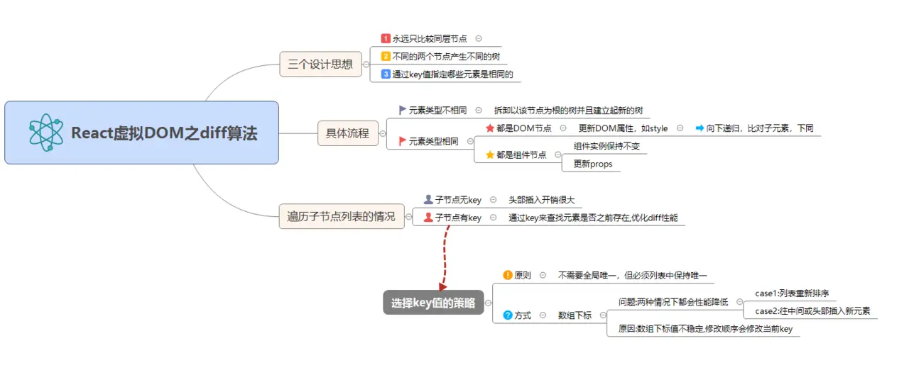

真正的无知不是知识的贫乏, 而是拒绝获取知识!
——波普尔 (哲学家 思想家)
优化之减少渲染
目标
- diff算法
- 优化方式
- Immutable以及替代品【重点】
文章流程
React -> 遇到问题 -> 优化 -> 优化方式 -> 原理以及选择
第一部分 diff算法以及问题
React 采用的是虚拟 DOM (即 VDOM )，每次属性 (props) 和状态 (state) 发生变化的时候，render 函数返回不同的元素树，React 会检测当前返回的元素树和上次渲染的元素树之前的差异，然后针对差异的地方进行更新操作，最后渲染为真实 DOM，这就是整个 Reconciliation 过程，其核心就是进行新旧 DOM 树对比的 diff 算法。

为了获得更优秀的性能，首当其冲的工作便是 减少 diff 的过程，那么在保证应该更新的节点能够得到更新的前提下，这个 diff 的过程如何来避免呢？
答案是利用 shouldComponentUpdate 这个生命周期函数。这个函数做了什么事情呢？

第二部分 解决方案
由第一部分中的流程图以及生命周期函数shouldComponentUpdate可知，如果想要该渲染的时候才渲染，就只能在此做操作。
重点就在于：属性 (props) 和状态 (state) 什么时候发生变化。
1. PureComponent (memo) 进行浅层比较 |
深浅比较
PureComponent (memo) 进行浅层比较。源码中有段代码中，一旦属性的值为引用类型的时候浅比较就失灵了。这种方式仅仅适用于无状态组件或者状态数据非常简单的组件，对于大量的应用型组件，它是无能为力的。
那么，如果在shouldComponentUpdate进行深层比较，即全比较，如果数据量大，则性能损耗严重。
怎么解决这个问题?
function shallowEqual (objA: mixed, objB: mixed): boolean { |
状态对比
关于如何做对比以及采用何种方式，在第三部分由始说起
第三部分 Immutable Data 相关
鉴于上述问题，针对数据罗列主要的几种类型的数据结构，如下：
- 不可变（Immutable）数据
- 新数据结构
- 不可变更新（Immutable Update）实用程序
- Immutable/Redux 互操作
immutable-js
Shared mutable state is the root of all evil（共享的可变状态是万恶之源）
– Pete Hunt

JavaScript 中的对象一般是可变的（Mutable），因为使用了引用赋值，新的对象简单的引用了原始对象，改变新的对象将影响到原始对象。如 foo={a: 1}; bar=foo; bar.a=2 你会发现此时 foo.a 也被改成了 2。
虽然这样做可以节约内存，但当应用复杂后，这就造成了非常大的隐患，Mutable 带来的优点变得得不偿失。
为了解决这个问题，一般的做法是使用 shallowCopy（浅拷贝）或 deepCopy（深拷贝）来避免被修改，但这样做造成了 CPU 和内存的浪费。
Immutable 可以很好地解决这些问题。
Immutable Data
Immutable Data 就是一旦创建，就不能再被更改的数据。对 Immutable 对象的任何修改或添加删除操作都会返回一个新的 Immutable 对象。
Immutable 实现的原理是 Persistent Data Structure（持久化数据结构），也就是使用旧数据创建新数据时，要保证旧数据同时可用且不变。
同时为了避免 deepCopy 把所有节点都复制一遍带来的性能损耗，Immutable 使用了 Structural Sharing（结构共享），即如果对象树中一个节点发生变化，只修改这个节点和受它影响的父节点，其它节点则进行共享。请看下面动画：
{kind=link}
Facebook 工程师 Lee Byron 花费 3 年时间打造，与 React 同期出现，但没有被默认放到 React 工具集里（React 提供了简化的 Helper）。它内部实现了一套完整的 Persistent Data Structure，还有很多易用的数据类型。像 Collection、List、Map、Set、Record、Seq。有非常全面的map、filter、groupBy、reduce、find函数式操作方法。同时 API 也尽量与 Object 或 Array 类似。
其中有 3 种最重要的数据结构说明一下：（Java 程序员应该最熟悉了）
Map：键值对集合，对应于 Object，ES6 也有专门的 Map 对象 |
// 原来的写法 |
Immutable.is
|
优缺点
- Immutable 降低了 Mutable 带来的复杂度
- 节省内存
- Undo/Redo，Copy/Paste，甚至时间旅行这些功能做起来小菜一碟
- 并发安全
- 需要学习新的 API
- 增加了资源文件大小
- 容易与原生对象混淆
import { is } from 'immutable'; |
如下图

immerjs
Immer 想解决的问题，是利用元编程简化 Immutable 使用的复杂度。
immer 是使用原生数据结构的 API 而不是内置的 API.
const produce = require('immer') |
produce(obj, draft => { |
整体思路：draft 是 obj 的代理，对 draft mutable 的修改都会流入到自定义 setter 函数，它并不修改原始对象的值，而是递归父级不断浅拷贝，最终返回新的顶层对象，作为 produce 函数的返回值。
构建代理
{ |
在这个代理对象上，绑定了自定义的 getter setter，然后直接将其扔给 produce 执行。
getter
produce 回调函数中包含了用户的 mutable 代码。所以现在入口变成了 getter 与 setter。
getter 主要用来懒初始化代理对象，也就是当代理对象子属性被访问的时候，才会生成其代理对象。
- 不浪费资源；
- 子对象可以被访问到。
setter
当对 draft 修改时，会对 base 也就是原始值进行浅拷贝，保存到 copy 属性，同时将 modified 属性设置为 true。这样就完成了最重要的 Immutable 过程，而且浅拷贝并不是很消耗性能，加上是按需浅拷贝，因此 Immer 的性能还可以。
同时为了保证整条链路的对象都是新对象，会根据 parent 属性递归父级，不断浅拷贝，直到这个叶子结点到根结点整条链路对象都换新为止。
完成了 modified 对象再有属性被修改时，会将这个新值保存在 copy 对象上。
生成 Immutable 对象
当执行完 produce 后，用户的所有修改已经完成（所以 Immer 没有支持异步），如果 modified 属性为 false，说明用户根本没有改这个对象，那直接返回原始 base 属性即可。
如果 modified 属性为 true，说明对象发生了修改，返回 copy 属性即可。但是 setter 过程是递归的，draft 的子对象也是 draft（包含了 base copy modified 等额外属性的代理），我们必须一层层递归，拿到真正的值。
所以在这个阶段，所有 draft 的 finalized 都是 false，copy 内部可能还存在大量 draft 属性，因此递归 base 与 copy 的子属性，如果相同，就直接返回；如果不同，递归一次整个过程（从这小节第一行开始）。
最后返回的对象是由 base 的一些属性（没有修改的部分）和 copy 的一些属性（修改的部分）最终拼接而成的。最后使用 freeze 冻结 copy 属性，将 finalized 属性设置为 true。
至此，返回值生成完毕，我们将最终值保存在 copy 属性上，并将其冻结，返回了 Immutable 的值。
Immer 因此完成了不可思议的操作：Create the next immutable state by mutating the current one。
源码读到这里，发现 Immer 其实可以支持异步，只要支持 produce 函数返回 Promise 即可。最大的问题是，最后对代理的 revoke 清洗，需要借助全局变量，这一点阻碍了 Immer 对异步的支持。

优点
Immutability with normal JavaScript objects, arrays, Sets and Maps. No new APIs to learn! |
参考阅读：
Immutable详解及 React 中实践
精读 Immutable 结构共享
深入探究Immutable.js的实现机制（一）
深入探究immutable.js的实现机制（二）
immer.js 简介及源码简析